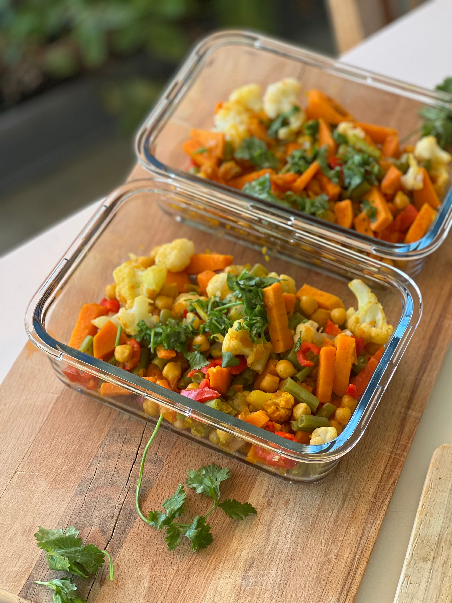
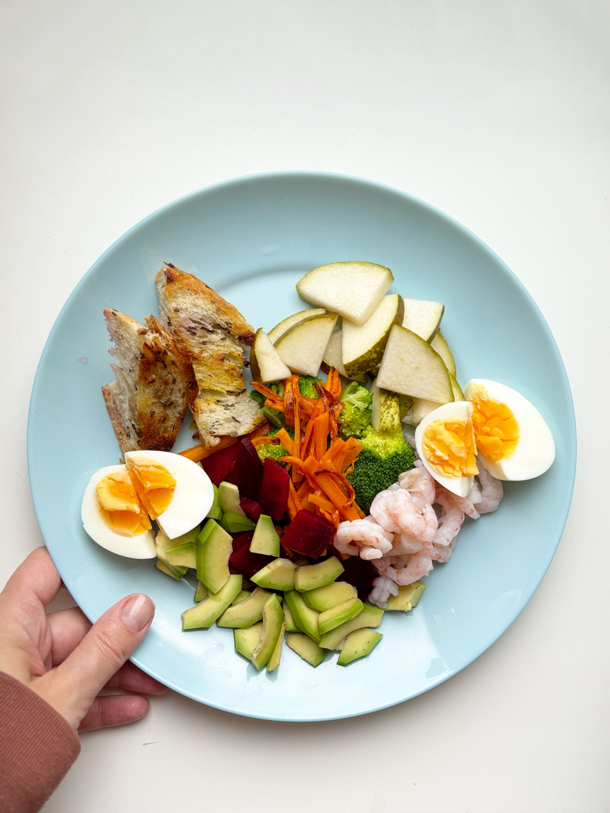
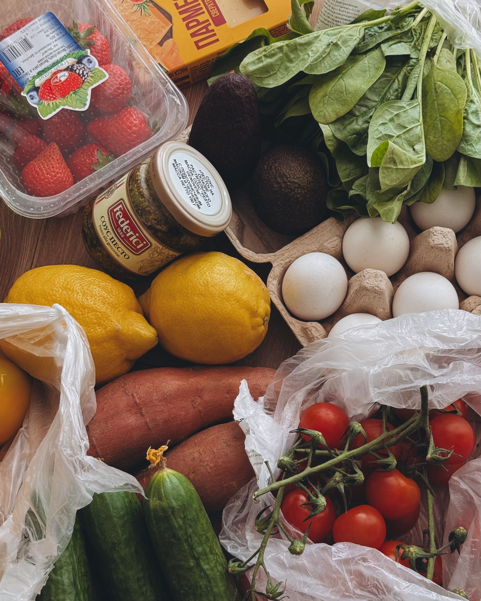

Opbevar maden rigtigt
Hold dine råvarer friske længere.
Små tips, der gør det nemmere at undgå madspild i hverdagen.

Hold dine råvarer friske længere.

Brug det, du allerede har.

Køb kun det, du har brug for.